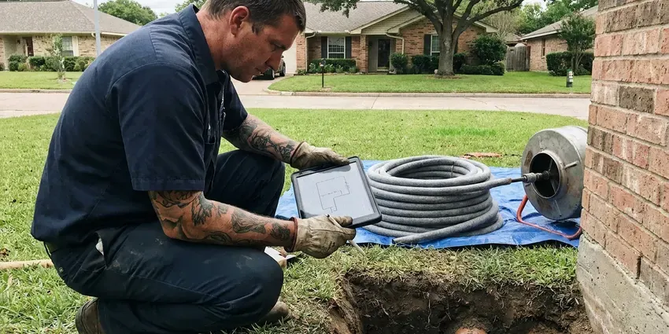

Foundation Leak Repair in New Martinsville, WV
Facing a foundation leak in New Martinsville, WV? GJK Plumbing provides professional repair services to protect your home's structural integrity.
- Skilled Slab Repair
- West Virginia Plumbing Pros
- Licensed & Insured
- Reroute or Direct Repair

Stop Foundation Leaks Before They Get Worse in New Martinsville, WV.
Call GJK Plumbing today for a careful inspection and lasting repair.
Precise Foundation Leak Repair in New Martinsville, WV for Water and Drain Lines
GJK Plumbing specializes in diagnosing and repairing foundation leaks, a critical service for homes in New Martinsville, WV. Our team uses specialized tools like acoustic leak detectors and thermal imaging to find the exact source of water intrusion, whether it is from plumbing lines or exterior water runoff.
Our expertise includes:
- Rerouting water lines overhead or through walls to go around the foundation
- Repairing copper, PEX, and PVC lines effectively.
- Durable epoxy and hydraulic cement repairs

Additional Plumbing Repair Services in New Martinsville, WV
We offer expert plumbing repair services across New Martinsville, WV to stop leaks, clear blockages, and keep every fixture working the way it should.


Customers
Why Choose GJK Plumbing for Foundation Leak Repair in New Martinsville, WV?
We act quickly to stop the water and choose the repair method that best protects your home's structure, flooring and budget.
- Local Expertise, GJK Plumbing has broad experience with the common foundation types in West Virginia, including slab and crawl space designs, and understands how each one is vulnerable to leaks.
- Multiple Options, We compare direct repair, reroute and repipe so you pick the best fit.
- Structure Aware, We look for soil and slab damage and refer you to a structural engineer when necessary.
Citywide Coverage
GJK Plumbing serves every neighborhood of New Martinsville with timely and efficient foundation leak repair services. No matter where you are located within New Martinsville, our experienced technicians are ready to respond to your call.
Experienced Team
Our team includes plumbers experienced with post-tension slabs, stem wall foundations and raised floors. They know how to work carefully without damaging structural elements.
Safety-First Approach
For every foundation leak repair, GJK Plumbing puts a priority on safety and compliance with all West Virginia plumbing standards. Our methods are designed to limit disruption while making sure the repair is robust and meets all regulatory requirements.
Trusted Certified New Martinsville Plumbing Services Professionals
At GJK Plumbing, we take pride in providing licensed, certified plumbing services throughout New Martinsville, WV. Backed by leading industry credentials, our experienced plumbers combine technical skill with genuine customer care. Whether it is repair, installation, or maintenance, we follow strict safety and quality standards to deliver lasting results you can trust.
Call Us Now PHCC Plumbing Contractor Recognition
PHCC Plumbing Contractor Recognition Better Business Bureau (BBB) Accreditation
Better Business Bureau (BBB) Accreditation Angi Certified Pro
Angi Certified Pro ISO 9001 Quality Management Certification
ISO 9001 Quality Management CertificationCareful Foundation Leak Repair Services in New Martinsville, WV
Foundation Leak Detection in New Martinsville
Accurate detection is the key step in foundation leak repair. We isolate hot and cold lines and pressure test them to confirm a leak exists. Then we use acoustic listening equipment and electronic line tracing to find the exact spot beneath the foundation. Thermal imaging helps confirm hot water leaks by showing warm spots on the floor.

Slab Leak Detection & Repair in New Martinsville
Slab leaks are known for being difficult to detect, often showing subtle signs like warm spots on the floor or a sudden jump in your water bill. GJK Plumbing uses acoustic and infrared technology to accurately locate these hidden leaks under your concrete foundation. Once identified, we offer tailored repair solutions, whether it's a spot repair, re-routing, or pipe bursting, to restore your plumbing system in New Martinsville without extensive damage to your property.
Residential Foundation Leak Repair in New Martinsville, WV
For homeowners in New Martinsville, WV, a foundation leak is a serious concern that can affect everything from utility bills to structural stability. GJK Plumbing provides complete residential foundation leak repair services designed to protect your home and investment. We focus on diagnosing the root cause of the leak, whether it's pipe corrosion, ground shifts, or installation defects, and providing a long-lasting solution suited to your home's specific needs.
Emergency Foundation Leak Repair in New Martinsville
A sudden, severe foundation leak can cause rapid damage and requires immediate attention. GJK Plumbing offers emergency foundation leak repair services in New Martinsville to handle critical situations. Whether it is a burst pipe under the slab or a large wall crack, our rapid response team is equipped to limit damage, stop the leak, and perform necessary repairs quickly and efficiently. Feel free to call us for urgent leak issues.
Crawl Space Foundation Leak Repair in New Martinsville, WV
Crawl space foundations can develop leaks from plumbing, groundwater, or HVAC condensation. These leaks can lead to wood rot, mold, and structural damage if not addressed quickly. Our team carefully inspects the crawl space and identifies the source of water intrusion. We then implement solutions such as pipe repair, sump pump installation, or vapor barrier replacement to dry out and protect your crawl space in New Martinsville, WV from future moisture issues.
Basement Wall Sealing and Waterproofing in New Martinsville, WV
For homes with basements in New Martinsville, WV, wall leaks can be a real concern. We offer complete basement waterproofing services, including interior and exterior sealing. This may involve applying waterproof coatings, sealing cracks with polyurethane or epoxy, or setting up interior drainage systems. These measures prevent water from penetrating porous concrete and masonry, keeping your basement dry and healthy.
Emergency Foundation Leak Service in New Martinsville
A sudden, major foundation leak can cause rapid and severe damage, requiring immediate attention. GJK Plumbing offers emergency foundation leak repair services in New Martinsville to handle urgent situations. Our quick response team is equipped to assess the leak, isolate the damaged line, and make a temporary or permanent repair to limit water damage and protect your home's structural integrity, even after hours.

Commercial Foundation Leak Services in New Martinsville
Businesses in New Martinsville also face the risk of foundation leaks, which can disrupt operations and lead to costly property damage. GJK Plumbing offers specialized commercial foundation leak repair services and respects the need for minimal downtime. Our team can work around your business hours to conduct leak detection and repairs, making sure your commercial plumbing system is restored promptly and reliably.
Foundation Leak Repair Near Me in New Martinsville, WV
If you're searching for 'foundation leak repair near me' in New Martinsville, WV, call GJK Plumbing. We are your local experts, deeply familiar with the plumbing systems and common issues found in homes across our community. Our proximity means faster response times and a team ready to tackle your leak with efficiency and expertise.
When a foundation leak strikes, you need a trusted local plumbing company that understands local soil and weather. GJK Plumbing is dedicated to providing fast, professional foundation leak repair services throughout New Martinsville, WV. We're just a call away, ready to restore the safety and integrity of your home.
GJK Plumbing at a Glance
- Licensed and insured plumbers serving New Martinsville, WV
- Same-day appointments and 24/7 emergency response
- Clear written estimates, no hidden fees
- 4.8-star rated by 832+ West Virginia customers
New Martinsville Map
New Martinsville Information
- Population
- 5,087
- Area codes
- Local
- Service area
- New Martinsville and communities within 40 miles
- Nearby
- Moundsville, Wheeling, Clarksburg, Fairmont
Soil around a foundation responds when a hidden pipe leak soaks it, so a minor leak under a foundation in New Martinsville, WV can soon turn into cracked slabs and shifting walls.
Expert Services
Trust our professionals for reliable GJK Plumbing solutions in New Martinsville, WV.
Our Specialized Plumbing Services in New Martinsville, WV
At GJK Plumbing, we provide a complete range of plumbing services across New Martinsville, WV. From leak detection to full system installations, our team ensures fast, precise, and affordable service for both residential and commercial properties. Explore our core services below:


How Our Foundation Leak Repair Process Works in New Martinsville, WV
We follow a simple process to find the leak, choose the right repair and protect your home.
Request a Quote
Call (681) 223-3607 and describe what you are noticing, such as warm floors, cracks or a moving water meter. We schedule leak detection quickly.
Detect and Plan
We pressure test and locate the leak, then review direct repair and reroute options. You get a written price for each.
Repair and Verify
We complete the chosen repair and pressure test the line. Concrete is patched or walls are closed, and we verify the leak is stopped.
Frequently Asked Questions About Foundation Leak Repair in New Martinsville
The cost of foundation leak repair in New Martinsville, WV can vary widely, typically ranging from $500 for minor crack sealing to $5,000 or more for complex slab leaks requiring extensive excavation or re-piping. Factors include the leak's location, severity, accessibility, and the type of foundation. We provide a detailed, upfront estimate after a careful inspection.
You can check your water meter with all fixtures off to verify a leak. Locating the exact spot under a foundation requires specialized equipment and training.
Common signs include unexplained increases in your water bill, warm spots on the floor, the sound of running water when no fixtures are in use, visible cracks in the foundation or walls, and sudden drops in water pressure. Musty odors or visible moisture around the foundation in New Martinsville are also red flags.
For extensive foundation leak repairs, especially those involving structural changes, re-piping, or significant excavation, a permit may be required by local building codes. GJK Plumbing will help figure out if a permit is needed for your specific repair and assist with the application process to ensure compliance.
Direct repair works well for a single leak in otherwise good pipe. Rerouting is often better when pipe is aging, the slab is post-tensioned or the leak is in a hard-to-reach spot. We help you weigh both.
Our technicians are experienced in repairing and replacing all common types of residential plumbing pipe found in New Martinsville, including copper, PEX (e.g., Uponor, Viega), and PVC. We use quality, code-compliant materials for all repairs to ensure durability and longevity.
While some very minor surface cracks might be sealed with DIY products, most foundation leaks, especially those involving plumbing or structural integrity, require professional expertise. Improper repairs can lead to greater damage, costly future fixes, and may not comply with local building codes. It is always best to talk to a professional.
In most cases, significant plumbing repairs involving your foundation in New Martinsville, WV will require a permit so the work meets local building codes and safety standards. Water heater replacements, sewer repairs and new plumbing in additions usually require a permit where local code enforcement applies. GJK Plumbing handles all necessary permitting on your behalf, so your repair is compliant and approved.
What People Are Saying About Our Plumbing Experts?

Robert G.
The trenchless sewer replacement saved our front yard. They walked us through the camera inspection footage first so we knew exactly what we were paying for.
Sewer Line Replacement · Moundsville, WVJames P.
Our commercial plumbing system had a leak under the sink, and GJK Plumbing handled it professionally. The plumbers arrived quickly and restored everything without disruption to our customers.
Commercial Plumbing · Vienna, WV
Patricia H.
We had a slab leak that two other companies could not find. GJK Plumbing located it in under an hour, explained our options, and the price matched the quote to the dollar.
Slab Leak Repair · Fairmont, WV
Sofia M.
Two new toilets installed in one visit, no mess left behind, and the tech even adjusted a faucet he noticed was dripping. Fair pricing and really friendly.
Toilet Installation · Clarksburg, WVLaura S.
I scheduled a water heater replacement, and the team made the process smooth and affordable. The new unit works perfectly, and they cleaned up after completing the job.
Water Heater Replacement · Moundsville, WV
Emily R.
I called GJK Plumbing for plumbing repair, and the technician was fast, polite, and thorough. They explained the problem clearly and fixed it the same day. I will definitely hire them again. Highly recommended!
Plumbing Repair · New Martinsville, WV